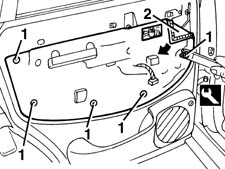
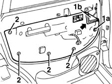

7010A04 rear side door water guard protection - r r or arrange with door panel removed
- Path
- Procedures > 70 FITTINGS > 7010 PASSENGER COMPARTMENT REAR SIDE DOORS > 7010A rear side door assembly > 7010A04 rear side door water guard protection - r r or arrange with door panel removed
- Kind
- repair procedure (removal / refitting; the operation number is the code)
- Applies to
- all engines; all production periods
- Interactive page
- https://sloeber94.github.io/elrnDB-fMltpl/en/#/2892063
Applies to: all engines; all production periods
 Removing
Removing
 Refitting
Refitting1. Disengage the retainers using the appropriate tool.
 | Name | Country |
|---|---|---|
1 | Scraper blade | 1.878.077.000 |
2. Remove the door seal.

Applies to: all engines; all production periods
Refitting
RemovingCheck that the new door strip is undamaged and not torn.
1. Fit the door seal (1a).
2. Engage the retainers.

Topics that link to this page (20)
- 5505B21 rear door wiring - r r
- 7010A05 rear side door water guard protection-r r or arrange
- 7010C10 rear door outer handle - r r with door panel removed
- 7010C11 rear side door outside handle-r r
- 7010C50 rear side door interior opening mechanism-r r for repair or replacement with door panel removed
- 7010C51 rear side door inner catch return device - r+r for repair or replacement
- 7010C66 rear side door safety catch link-r r with door panel removed
- 7010C67 rear side door safety catch link-r r
- 7010D14 rear side door descending window glass - r r with door panel (and mount frame) removed
- 7010D15 rear side door descending window glass-r r
- 7010D22 rear side door descending window glass guide (one) - r r with door panel (and support frame) removed
- 7010D23 rear side door descending window glass guide one-r r
- 7010D34 rear side door manual window mechanism - r r with door panel and mount frame removed
- 7010D35 rear side door manual window glass-r r
- 7010M20 repeair side door electrically operated window motor - r r with door panel-mount frame removed
- 7010M21 rear side door electrically-operated window-r r
- 7010M24 front side door electrically operated window mechanism - check positioning and fastening
- 7010M25 lh rear side doorelectrically-operated window mechanism-check position and fastening
- 7010N20 rear side door lock motor/catch assembly - r r with door panel and support frame removed
- 7010N21 rear side door lock motor-lock assembly r r